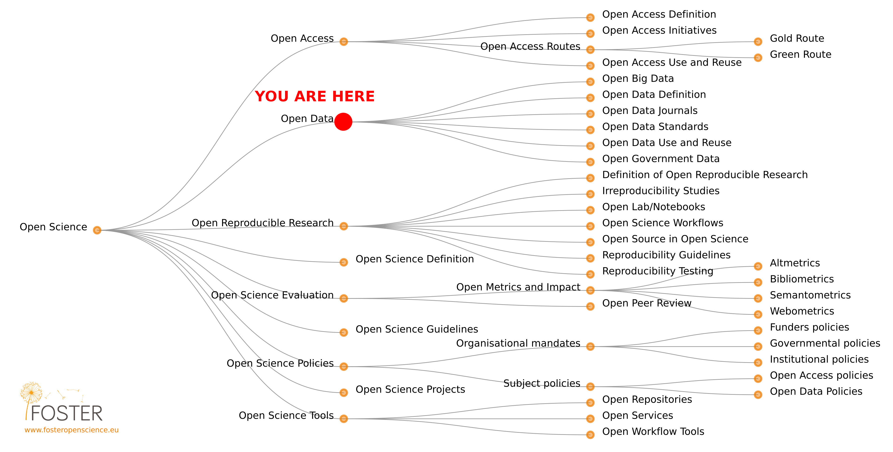

Open Science
Basic principles and best practices
Dr. Domenico Giusti
Paläoanthropologie, Senckenberg Centre for Human Evolution and Palaeoenvironment
Course roadmap

2. Open Research Data and Materials
Outline
- Definitions
- Rationale
- Summary
- FAQ
- Food for thought
- Practical exercises
Definitions
What is Open?
Open means anyone can freely access, use, modify, and share for any purpose (subject, at most, to requirements that preserve provenance and openness)
In the beginning was Open government data
"In 2009 open data started to become visible in the mainstream, with various governments (such as the USA, UK, Canada) announcing new initiatives towards opening up their public information." The Open Data Handbook
EU countries followed up soon after by opening their public data (DE, IT, etc...).
"The European data strategy aims to make the EU a leader in a data-driven society. Creating a single market for data will allow it to flow freely within the EU and across sectors for the benefit of businesses, researchers and public administrations".
Open EU Data
Access to data and the ability to use it are essential for innovation and growth.
EU Projected figures 2025

The business of Open (government) data
- Transparency
- "In a well-functioning, democratic society citizens need to know what their government is doing. To do that, they must be able to freely access government data and information and to share that information with other citizens. Transparency isn’t just about access, it is also about sharing and reuse".
- Participation and engagement
- "Participatory governance or for business and organizations engaging with your users and audience. Much of the time citizens are only able to engage with their own governance sporadically — maybe just at an election every 4 or 5 years. By opening up data, citizens are enabled to be much more directly informed and involved in decision-making. This is more than transparency: it’s about making a full “read/write” society — not just about knowing what is happening in the process of governance, but being able to contribute to it".
The business of Open (government) Data
- Releasing social and commercial value
- "In the digital age, data is a key resource for social and commercial activities. Everything from finding your local post office to building a search engine requires access to data, much of which is created or held by government. By opening up data, government can help drive the creation of innovative business and services that deliver social and commercial value".
- Data Journalism: 538.com hosts stories and opinion pieces covering poll analyses, politics, economics, health, popular culture, and sports. Most of their articles provide references and links to the original data sources plus details on how their figures, analyses and statistical models were developed. -> GitHub
- "In the digital age, data is a key resource for social and commercial activities. Everything from finding your local post office to building a search engine requires access to data, much of which is created or held by government. By opening up data, government can help drive the creation of innovative business and services that deliver social and commercial value".
What is Open Research Data?
"Open research data is data that can be freely accessed, reused, remixed and redistributed, for academic research and teaching purposes and beyond. Ideally, open data have no restrictions on reuse or redistribution, and are appropriately licensed as such. In exceptional cases, e.g. to protect the identity of human subjects, special or limited restrictions of access are set. Openly sharing data exposes it to inspection, forming the basis for research verification and reproducibility, and opens up a pathway to wider collaboration".
FAIR Principles

FAIR Principles
- FINDABLE
- The first thing to be in place to make data reusable is the possibility to find them. It should be easy to find the data and the metadata for both humans and computers. Automatic and reliable discovery of datasets and services depends on machine-readable persistent identifiers (PIDs) and metadata.
- ACCESSIBLE
- The (meta)data should be retrievable by their identifier using a standardized and open communications protocol, possibly including authentication and authorisation. Also, metadata should be available even when the data are no longer available.
NOTE: (meta)data is used to refers to both metadata and data
FAIR Principles
- INTEROPERABLE
- The data should be able to be combined with and used with other data or tools. The format of the data should therefore be open and interpretable for various tools, including other data records. The concept of interoperability applies both at the data and metadata level. For instance, the (meta)data should use vocabularies that follow FAIR principles.
- RE-USABLE
- Ultimately, FAIR aims at optimizing the reuse of data. To achieve this, metadata and data should be well-described so that they can be replicated and/or combined in different settings. Also, the reuse of the (meta)data should be stated with (a) clear and accessible license(s).
NOTE: (meta)data is used to refers to both metadata and data
Metadata provide a basic description of the data, often including authorship, dates, title, abstract, keywords, and license information. They serve first and foremost the findability of data (e.g. creator, time period, geographic location)
Why metadata?
Data outlive its original context - Limitations of data may be obvious within their original context, such as a library catalog, but may not be evident once data is divorced from the application it was created for.
Data cannot stand alone - Information about the context and provenance of the data - how and why it was created, what real-world objects and concepts it represents, the constraints on values - is necessary to helping consumers interpret it responsibly.
Structuring metadata about datasets in a standard, machine-readable way encourages the promotion, shareability, and reuse of data.
Metadata standards
DOI - "The Digital Object Identifier (DOI) system provides a technical and social infrastructure for the registration and use of persistent interoperable identifiers, called DOIs, for use on digital networks. [...] Although originating in text publishing, the DOI was conceived as a generic framework for managing identification of content over digital networks, recognising the trend towards digital convergence and multimedia availability." DOI Handbook
Dublin Core - A set of fifteen "core" elements (properties) for describing digital resources (video, images, web pages, etc.) as well as physical resources such as books or works of art.
Darwin Core - An extension of Dublin Core for biodiversity informatics
ISO 19136-1:2020 - The Geography Markup Language (GML), defined by the Open Geospatial Consortium express geographic information.
5 ★ Open Data

5 ★ Open Data
| ★ | make your stuff available on the web (whatever format) under an open license |
| ★★ | make it available as structured data (e.g. Excel instead of image scan of a table) |
| ★★★ | make it available in a non-proprietary open format (e.g. CSV instead of Excel) |
| ★★★★ | use URLs to identify things, so that people can point at your stuff |
| ★★★★★ | link your data to other people’s data to provide context |
Semantic Web & Linked Open Data (LOD)
The Semantic Web is an extension of the World Wide Web with the aim to make published information and data machine-readable. The ultimate goal is to enable computers to better manipulate information and make meaningful interpretations. For the Semantic Web to function, computers must have access to LOD, structured data modeled as a graph and published in a way that allows interlinking across servers.
P.S. The Semantic Web is widely used in the development of knowledge graphs in different domains, science included
Sensitive data & Intellectual property
Sensitive data - Many fields of scientific disciplines involve working with sensitive personal data. Their management is well regulated in data protection legislation (in Europe through national implementations of the General Data Protection Regulation) and ethics procedures as they are established in most research institutions /// Sensitive cultural heritage data
Intellectual Property (IP) - "a legal term that refers to creations of the mind. Examples of intellectual property include music, literature, and other artistic works; discoveries and inventions; and phrases, symbols, and designs". Open Research Glossary
Intellectual Property Rights (IPR) - "the rights given to the owners of intellectual property. IPR is protected either automatically (eg copyright, design rights) or by registering or applying for it (eg trademarks, patents). Protecting your intellectual property makes it easier to take legal action against anyone who steals or copies it. IPR can be legally sold, assigned or licenced by the creator to other parties, or joint-owned". Open Research Glossary
Legal and technical solutions
With an appropriate data management plan much sensitive and proprietary data can be FAIRly shared and reused.
- Sharing personal data can often be accomplished by using a combination of obtaining informed consent, data anonymisation and regulating data access. (Legal solution)
- "Redacting the locations of archaeological sites to prevent looting is an obvious case of preparing data for sharing to reduce the risk of damage to the sites (and in some jurisdictions, mandated by law)". Marwick & Birch (Technical solution)
- Restricting access, or imposing embargos to protect intellectual property (Legal solution)
- Redacting portions of data to protect intellectual property (Technical solution)
The metadata can almost always be shared.
Rationale
Research data are often the most valuable output of many research projects, they are used as primary sources that underpin scientific research and enable derivation of theoretical or applied findings.
Data & Reproducible research

"In order to make findings/studies replicable, or at least reproducible or reusable in any other way, the best practice recommendation for research data is to be as open and FAIR as possible, while accounting for ethical, commercial and privacy constraints with sensitive data or proprietary data." The Open Science Training Handbook
Data & Research lifecycle

This image (and the previous one) was created by Scriberia for The Turing Way community and is used under a CC-BY licence
Data ownership VS. Data stewardship


{kind=link}
Intensive data-sharing fields
- Depend on access to global databases
- Prepare data for sharing as an integral part of the research process and invest less effort
- Pooling and sharing data resources is expected
- "The cumulative nature of work that builds on common data and common methods reduces the likelihood of alternative data sources and other methods being widespread; and the number of theoretical choices is limited because there is enough data to adequately test competing theories." Marwick & Birch 2018
Restricted data-sharing fields
- Depend mostly on data collected by the individual researcher
- Discouraged by the effort needed to prepare the data for sharing
- Data are rare, or hard to get, or both
- "The types of data available often dictate the methods used; and theories are relatively easy to generate and more difficult to validate. [...] Researchers often invest substantial time and resources on gathering their own data. The accumulation of data, and the quality of the data collected, is often a key determinant of the status of a researcher, leading to hoarding of data as an asset to be traded for professional benefit." Marwick & Birch 2018
Data publishing routes
Journal supplementary material service
PRO: Minor effort for the individual researchers CONS: Supplementary material is available to subscribers to the journal or, if the article or journal is open access, to everyone. Publishers own the data.
Data files on a personal website
PRO: Even less effort CONS: Data availability linked to the website life
Data repositories
- Institutional data repository
- General purpose repository
- Domain specific data repository (Archaeology: Open Context; the Digital Archaeological Record; Archaeology Data Service
Data publishing routes
Data papers - Data as publication!
- Properly documented with metadata
- Reviewed for quality, e.g. content of the study, methodology, relevance, legal consistency and documentation of materials
- Searchable and discoverable in catalogues (or databases)
- Citable in articles
EU policy: Data repositories
In order of preference:
- Use an external data archive or repository already established for your research domain to preserve the data according to recognised standards in your discipline.
- If available, use an institutional research data repository, or your research group’s established data management facilities.
- Use a cost-free data repository such as [Dataverse], [Dryad], [figshare] or [Zenodo].
- Search for other data repositories in re3data.
The European Open Science Cloud (EOSC)
Develop a trusted, virtual, federated environment that cuts across borders and scientific disciplines to store, share, process and re-use research digital objects (like publications, data, and software) following FAIR principles
Data citation
"Sound, reproducible scholarship rests upon a foundation of robust, accessible data. For this to be so in practice as well as theory, data must be accorded due importance in the practice of scholarship and in the enduring scholarly record. In other words, data should be considered legitimate, citable products of research. Data citation, like the citation of other evidence and sources, is good research practice and is part of the scholarly ecosystem supporting data reuse" Data Citation Synthesis Group: Joint Declaration of Data Citation Principles. Martone M. (ed.) San Diego CA: FORCE11; 2014
Data citation PRINCIPLES: Importance, Credit and Attribution, Evidence, Unique Identification, Access, Persistence, Specificity and Verifiability, Interoperability and Flexibility.
The data citation advantage is a tangible benefit to researchers who share data with publications, although the magnitude of the advantage varies greatly in different research areas.
Reasons to Share
- Encouraging scientific advancement
- Being a good community member
- Potential to encourage others to work on the problem
- Encouraging sharing and having others share with you
- The potential to set a standard for the field
- Improvement in the caliber of research
- Increase in publicity, track metrics of impact
- Opportunity to get feedback on your work
- Potential for finding collaborators
- Normalizing understanding in a field
- To reproduce or to verify research
- To make the results of publicly funded research availableto the public
- To enable others to ask new questions of extant data
- To advance the state of research and innovation
Reasons Not to Share
- The time it takes to clean up and document data for release
- The possibility that your data may be used without citation
- Legal barriers, such as copyright
- Time to verify privacy or other administrative dataconcerns
- The potential loss of future publications using these data
- Competitors may get an advantage
- Dealing with questions from users about the data
- Technical limitations, i.e., Web platform space constraints
- Intense competition in the topic
- Investment of large amount of work building the dataset
- Insufficient perceived reward, such as promotion or subsequent citation
- Effort in documenting
- Concerns for priority, including control of results and sources
- Intellectual property issues
Archaeological Data
Data sharing is unfunded, unrewarded, and only rarely required.
Summary
Summary
- Definition of Open Research Data
- FAIR principles
- 5 ★ Open Data
- Metadata & Metadata standards
- Sensitive data & Intellectual property
- Open Data -> Reproducible Research & Research cycle
- Data ownership VS. Data stewardship
- Data publication (Journal supplementary material, Data files on a personal website, Data repositories, Data journals)
- Data citation
- Reasons to Share & Not to Share
FAQ
Is it sufficient to make my data openly available?
No—openness is a necessary but not sufficient condition for maximum reuse. Data have to be FAIR in addition to open.
What do the FAIR principles mean/imply for different stakeholders/audiences?
Researchers may be reluctant to share their data because they are afraid that others will reuse them before they have extracted the maximum usage from them, or that others might not fully understand the data and therefore mis-use them. You may publish your data to make them findable with metadata, but set an embargo period on the data to make sure that you can publish your own article(s) first.
Is making my data FAIR a lot of extra work?
Not necessarily! Making data FAIR is not only the responsibility of the individual researchers but of the whole group. The best way to ensure that your data is FAIR is to create a Data Management Plan and plan everything beforehand. During the data collection and data processing follow the discipline standards and measures recommended by a repository.
I want to share my data. How should I license them?
First of all think about who owns the data? A research funder or an institution that you work for. Then, think about authorship. Applying a suitable license to your data is crucial in order to make them reusable.
I cannot make my data directly available—they are too large to share conveniently / have restrictions related to privacy issues. What should I do?
You should talk to experts in domain specific repositories on how to provide sufficient instructions to make your data findable and accessible.
Food for thought
"Similarly, some archaeologists may fear the limitations to publication potential that could result from others using their open data and code, the possibility that their materials may be used without citation, and the risk that competitors may gain an advantage. Our view is that these risks have always been present in the traditional research practices of scholarly communication and peer review, and that open science licensing and citation practices effectively mitigate them. Moreover, because sharing of data and code enables and encourages collaborative research, more open science practices can even increase the potential for new research (and publications) with extant data — an important benefit to junior researchers in particular". Marwick et al. 2017
Have you ever requested, for your own research, access to some data and received an unjustified negative answer?
References & further resources
Reading list
- Marwick & Birch. 2018. A Standard for the Scholarly Citation of Archaeological Data as an Incentive to Data Sharing. Advances in Archaeological Practice 1-19. DOI preprint PDF code & data
References & further resources
Data repository
- Nature recommended data repositories
- Registry of Research Data Repositories
- Open Context
- FastiOnline
- the Digital Archaeological Record
- Archaeology Data Service
- ROCEEH Out of Africa Database (ROAD)
- ARIADNE - EU funded project that integrated archaeological data infrastructures to be "embedded in a cloud that will offer the availability of Virtual Research Environments where data-based archaeological research may be carried out. The project will furthermore develop a Linked Data approach to data discovery, making available to users innovative services, such as visualization, annotation, text mining and geo-temporal data management."
Practical exercises
Practical exercises
Outline
- Research Data Management (RDM), or how to store, describe and reuse FAIR research data
- Data storage and organization
- Data organization in spreadsheets
- Documentation and Metadata
- Sharing and archiving